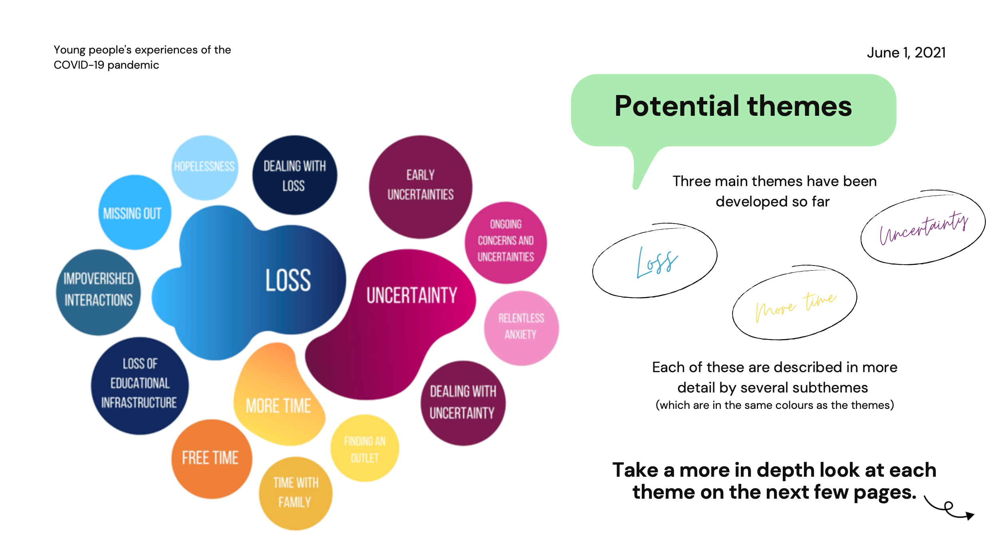
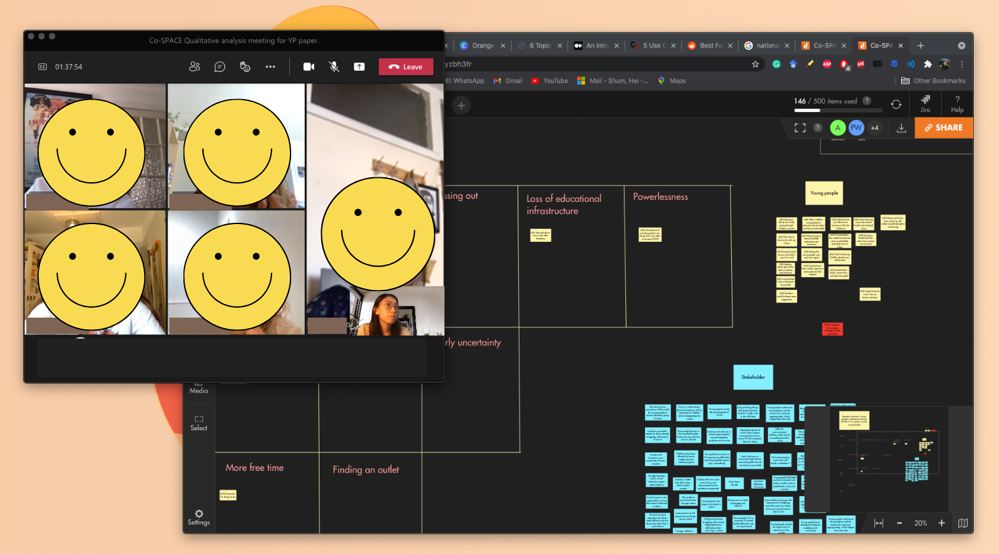

Running a remote affinity mapping meeting
Date: June 2021
Tools used: Affinity mapping
In early 2021, I had the chance to interview a number of young people and parents in the UK about their mental health experience during the pandemic. After coding all the transcripts, the next step was for my team to get together to try to find patterns and common themes from the sea of codes. This was an exciting stage as we invited two young people (aged 16-17) and one parent to take part in the analysis and theme development stage. Involving the public in our analysis rather than simply as participants helps ensure accurate interpretation and increase the quality of research. This is also referred to as qualitative co-production in academia and the laypeople we involved are called contributors.
There are a lot of advantages to hosting remote affinity mapping meetings (e.g. able to include people from different regions, save travel time, etc...) However, it does come with challenges as well and I wanted to share some tips in running these meetings remotely with . This short reflection will be divided into pre, intra, and post meeting.
01 Pre meeting
- What is qualitative research methodology? Send over brief explanation of what qualitative analysis and affinity mapping mean. If you're working with young people like me, there are videos on YouTube that explains what qualitative research is in engaging ways.
- What is your research about? Help attendees understand your research question, maybe include your topic guide, i.e. questions asked in the interviews. Our team prepared a simple presentation about our research question and codes for attendees to go through before the meeting (see below).

- What are your expectations? More often than not, it takes multiple affinity mapping sessions before researchers are satisfied with their themes. You may want to involve your lay contributors in only the first meeting or all meetings. Regardless, it's important to make a decision at the start and be clear with your expectations on the lay contributors' time commitments and reimbursement information (if any).
02 During the meeting
- Get comfortable with using the virtual platform. Affinity mapping in real life involves printing out the codes and organising them into groups either on the table or pinned to a board. Running these sessions only is slightly trickier as it requires both contributors and researchers to be familiar with the virtual platform (for us, we opted for Draft.io). Before diving into the analysis, walk everyone through the important features of the platform, e.g. creating a sticky note, moving it around, zooming in and out, etc.

- Minimise the power imbalance between contributors and researchers. It's important to reflect on your job title and the company/institution you represent as well as the age and background of the lay contributers. In our case, our researchers involved a professor from Oxford University and contributers were teenagers. To build contributers' confidence to speak freely, we had a fun and informal catch up with the contributers before diving into the discussion. During the session, we reassured them there are no bad ideas and all feedback is valued.
03 Post meeting
- Payment. Don't forget to reimburse your participants if any incentive was agreed!
- Summary of meeting outcomes and invitation to future sessions (if applicable). If you planned on getting the contributors involved in future meetings, now is a good time to book in a time and give them a heads up. It's also really helpful to send everyone a summary of the meeting outcomes.
Read more about co-production in qualitative analysis here [
Link to paper].